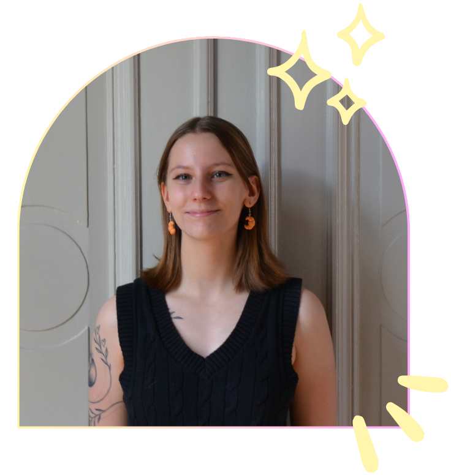

Hey, I'm Blanca!
A curious and creative communicator with experience in social media, marketing and community management.
Working with student-run events, social media, and a game project where I handle CM, content creation and marketing I've learned how to balance creativity with structure and keep things running smoothly behind the scenes. Outside of work you can often find me at a cozy café, behind a camera, or at a game industry event!
I thrive when there’s a lot going on; organizing is definitely my comfort zone (shoutout to Notion and Trello 🙌). With experience from both non-profit projects and the gaming industry, I've learned a lot about structure and problem solving and I'm quick to find ways forward when something doesn't go as planned.
Gaming culture is close to my heart and in all my work I try to carry that passion with me! Community is a huge part of the gaming experience, so I care about creating a positive atmosphere where everyone feels good and ideas can flow freely. If you're looking for someone who is committed and ready to contribute energy and new ideas: get in touch!

Tools I use
Social media & community
Meta Business Suite, Facebook, Instagram, Steam, Discord, Reddit, TikTok
Design
Canva, Figma, GitHub, VSCode
Productivity
Notion, Trello, Google Drive, Microsoft Teams
Things I love
- Longboarding
- Cozy games
- Sweet treats
- Making people smile
My work philosophy
I believe in clear communication, creativity, and curiosity! (That's a lot of C:s😯) I value being reliable and organized, but I also think it's important to stay adaptable and open to learning. Whether working with a team or community, I focus on building positive relationships. For me, the best projects are the ones that not only look good but also make people connect and smile!